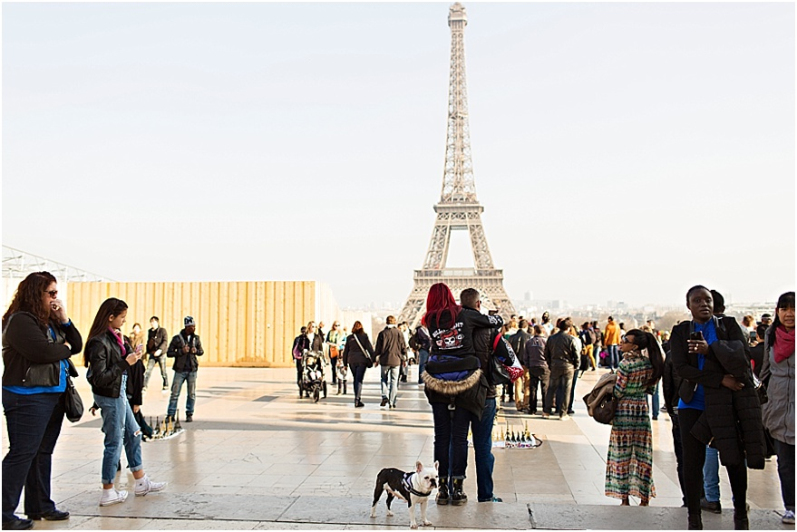
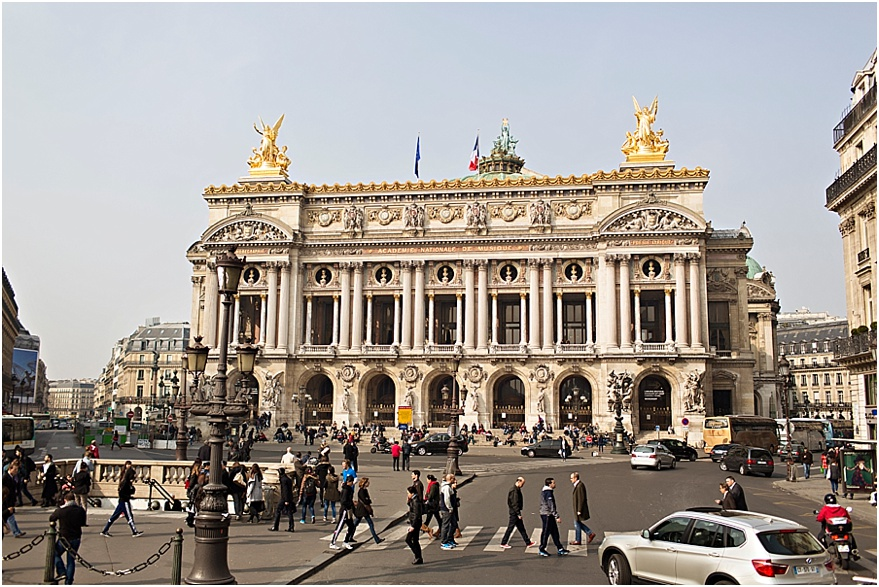
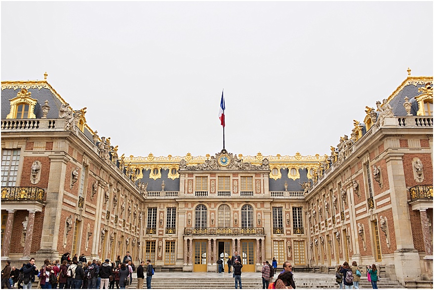
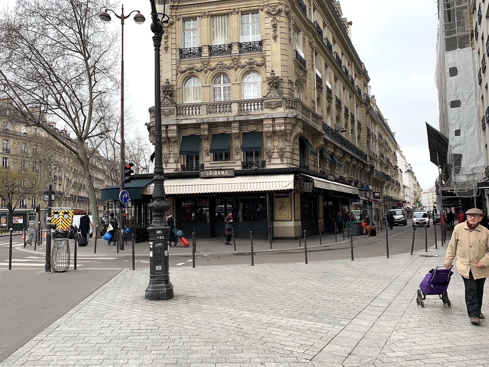

My first trip to Paris wasn't until I was twenty. I was studying abroad in Florence and my friends and I decided to take a weekend trip to the City of Lights. I had come down with terrible bronchitis that week and it was Valentine's Day Weekend. Part of the trip I remember and parts I can't. I am going to blame it on the fever and being sick. My Mom begged me not to go but I didn't want to pass up my first trip to Paris. Can you blame me?
We took the overnight train to Paris from Florence. My friends picked the hotel so I can't remember which arrondissement we first stayed in. There are so many things I would have done differently but I was in College and this was my first time abroad. We ate at Hard Rock Café and had huge burgers and visited the McDonald's in Galleries Lafayette. I am pretty sure we ate Chinese food one night and I decided I didn't like French food after seeing someone order snails at a nearby café. I did squeeze in a crêpe which I happily ate on the top of a double decker bus driving around the city in the middle of February. Probably not the best idea for someone who had bronchitis. I didn't even have a cup of coffee because I hadn't started drinking coffee until much later after this trip.
Now on the Tour of Paris
I loved all the arches, the doorways, the worn steps. I noticed that everything in Paris is in a circle and they have a tone of roundabout in the city. The roundabouts are hilarious too, because there are no lanes and it becomes pure chaos! It would be extremely nerve-racking driving in it, but it’s funny to watch. Since parking is so scarce there, everyone rode little motorcycle or mopeds. Dome got super fancy too!
When we went to the Louvre, I loved seeing all the old paintings with dogs. It made me so happy to see that people had pet’s way back then. My heart was happy
Some Advice for People going to Paris
The first day, I recommend going on the bus around the city. This will show you all the places you may want to stop and get off. We took the bus to see the places we wanted to go back to and spend more time at. It also very educational. I recommend spending all day at the Louver, because we only through half of the place and spend half of the day there. You need a whole day to go. Also, a must is going to the top of the Eiffel Tower, walking up to the top of Arc de Triomphe and Notre Dame. You will not regret it! The view is unbelievable. Take the metro and just walk around the street of Paris. The buildings and architecture are incredible. And don’t go to Paris with a budget for food. I’m being serious.